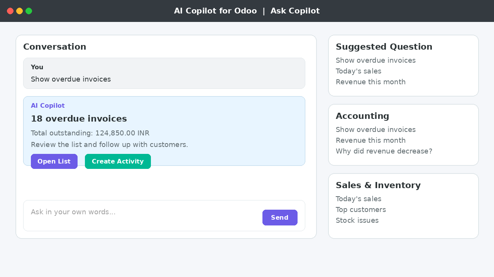

Screenshots

Ask Copilot screen with conversation and suggested questions.

Answers include action cards like Open List and Create Activity.

Enable and configure AI Copilot in Settings.
Ask everyday manager questions in plain language and get answers from your live Odoo data. Install it, configure it, and use it with your own company database.
Sales
Accounting
Inventory
CRM

Ask Copilot screen with conversation and suggested questions.
Answers include action cards like Open List and Create Activity.
Enable and configure AI Copilot in Settings.
This module is built for self-service use by your team. No custom project is required to start. Install from Odoo Apps, enable it, and ask.
Best for operations teams who want practical answers from Odoo data without development work.